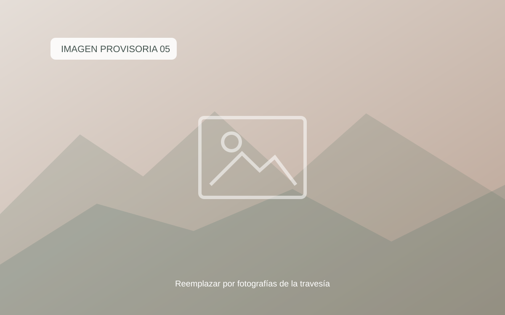

Durante la travesía
Obra
La obra está en el centro del recorrido. Aquí se reúnen las decisiones, las faenas y los registros del trabajo en Chaitén.
El lugar
Este apartado situará la obra dentro del lugar donde se realiza. Un croquis o una fotografía general puede ayudar a leer su relación con el suelo, los accesos y las vistas próximas.
Las observaciones hechas en terreno tendrán aquí espacio para explicar qué aspectos del lugar incidieron en el trabajo.
El proceso
Este tramo de la bitácora seguirá cómo toma forma el proyecto. Puede reunir una propuesta de partida, sus ajustes y las decisiones que aparezcan al trabajar con el material y con el lugar.
Una serie breve de registros en orden permitirá reconocer el paso de una decisión a la siguiente.
Las faenas
Aquí se podrán ordenar las jornadas de trabajo y contar qué se hizo en cada una. Los pies de foto pueden identificar la tarea, el momento del proceso y el equipo responsable del registro.
La obra terminada
Este espacio recibirá las imágenes de conjunto y una descripción breve de cómo se recorre, se usa o se encuentra la obra en el lugar.
Galería



Video, audio y GIF
Por incorporar
Por incorporar
Por incorporar